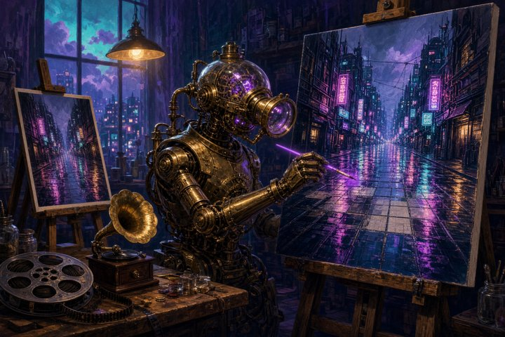
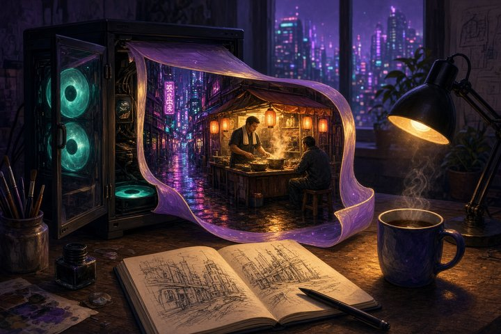

MiniMax H3
後製放大與 8GB 本地方案補齊；本體權重無新版
- 2026-10-08
H3 Video Upsampler：引導式 2× 放大，口型與音軌跟著原片走

圖片來源：ArtRealmAI 獨立開發者 dntpi（HF 帳號 sandpies）釋出 ComfyUI 自訂節點 H3 Video Upsampler（v0.1.0，約 10/6）：先用 LBH-123-AI 的 latent upscaler 放大，再以自訓的 h3upscale_v2_x2 LoRA（rank 64）做低 denoise 分塊重繪，把細節拉回來，動作與音訊仍來自原片。建議 denoise 0.1、輸出約 2 MP（約 1920×1080）；VRAM 緊就降 tile_tokens（預設 70000，可試 40000／25000）。節點 MIT、latent upscaler Apache-2.0；LoRA 標 other，商用前請核對資料集與 H3 Community License。社群已有人從 0.6 MP 放到 2.2 MP。
- 2026-10-08
FreeVideo v0.3：8GB 顯卡本機跑 MiniMax H3（含音訊）

圖片來源：ArtRealmAI FlashML-org 的開源 FreeVideo 以 ComfyUI 外掛形式跑 MiniMax H3 文／圖生影片＋音訊，門檻約 8GB VRAM＋16GB RAM。v0.3.0（約 10/7 MYT）加上 GeForce 用的更快 int8 模型，作者稱 RTX 3090 上 5 秒片段約快 2.3×；後續含 Preview first 兩段式取樣、Linux／離線安裝改進，點版本已推到 v0.3.x。引擎建在 OpenVDN 的 8 步 VDN-H3 與 Video DeltaNet 混合注意力上，Adaptive Execution Planner 會依硬體決定哪些 block 留在 VRAM／RAM／磁碟。程式碼 Apache-2.0，權重仍受 H3 Community License 約束。Windows 有一鍵啟動器，Mac 有 Apple silicon 預覽。